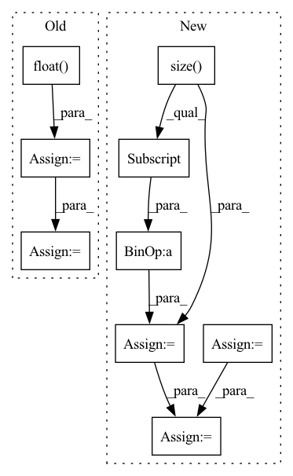

Pattern ID :21000
Before Change
def forward(self, x, rois, roi_indices):
roi_indices = torch.Tensor(roi_indices).float()
rois = torch.Tensor(rois).float()
if x.is_cuda:
roi_indices = roi_indices.cuda()
rois = rois.cuda()
indices_and_rois = torch.cat([roi_indices[:, None], rois], dim=1)
xy_indices_and_rois = indices_and_rois[:, [0, 1, 2, 3, 4]]
indices_and_rois = xy_indices_and_rois.contiguous()
// 利用建议框对公用特征层进行截取
pool = self.roi(x, indices_and_rois)
fc7 = self.classifier(pool)
After Change
roi_indices = roi_indices.cuda()
rois = rois.cuda()
rois_feature_map = torch.zeros_like(rois)
rois_feature_map[:, [0,2]] = rois[:, [0,2]] / img_size[1] * x.size()[3]
rois_feature_map[:, [1,3]] = rois[:, [1,3]] / img_size[0] * x.size()[2]
indices_and_rois = torch.cat([roi_indices[:, None], rois_feature_map], dim=1)
//-----------------------------------//
// 利用建议框对公用特征层进行截取
//-----------------------------------//
pool = self.roi(x, indices_and_rois)
//-----------------------------------//
// 利用classifier网络进行特征提取
//-----------------------------------//
fc7 = self.classifier(pool)
// 当输入为一张图片的时候，这里获得的f7的shape为[300, 2048]
fc7 = fc7.view(fc7.size(0), -1)
roi_cls_locs = self.cls_loc(fc7)
roi_scores = self.score(fc7)
roi_cls_locs = roi_cls_locs.view(n, -1, roi_cls_locs.size(1))
roi_scores = roi_scores.view(n, -1, roi_scores.size(1))
return roi_cls_locs, roi_scores
In pattern: SUPERPATTERN
Frequency: 4
Non-data size: 9
Instances Fragment ID: 67597316
Project Name: bubbliiiing/faster-rcnn-pytorch
Commit Name: d456f02a402fd8cf8db1d991aa612439b3c0ffb2
Time: 2021-01-30
Author: 47347516+bubbliiiing@users.noreply.github.com
File Name: nets/classifier.py
M Class Name: Resnet50RoIHead
N Class Name: Resnet50RoIHead
M Method Name: forward(5)
N Method Name: forward(4)
M Parent Class: nn.Module
N Parent Class: nn.Module
M File Name: nets/classifier.py
N File Name: nets/classifier.py
M Start Line: 68
M End Line: 77
N Start Line: 82
N End Line: 107
Before Change
def forward(self, x, rois, roi_indices):
roi_indices = torch.Tensor(roi_indices).float()
rois = torch.Tensor(rois).float()
if x.is_cuda:
roi_indices = roi_indices.cuda()
rois = rois.cuda()
indices_and_rois = torch.cat([roi_indices[:, None], rois], dim=1)
xy_indices_and_rois = indices_and_rois[:, [0, 1, 2, 3, 4]]
indices_and_rois = xy_indices_and_rois.contiguous()
// 利用建议框对公用特征层进行截取
pool = self.roi(x, indices_and_rois)
pool = pool.view(pool.size(0), -1)
After Change
roi_indices = roi_indices.cuda()
rois = rois.cuda()
rois_feature_map = torch.zeros_like(rois)
rois_feature_map[:, [0,2]] = rois[:, [0,2]] / img_size[1] * x.size()[3]
rois_feature_map[:, [1,3]] = rois[:, [1,3]] / img_size[0] * x.size()[2]
indices_and_rois = torch.cat([roi_indices[:, None], rois_feature_map], dim=1)
//-----------------------------------//
// 利用建议框对公用特征层进行截取
//-----------------------------------//
pool = self.roi(x, indices_and_rois)
//-----------------------------------//
// 利用classifier网络进行特征提取
//-----------------------------------//
pool = pool.view(pool.size(0), -1)
// 当输入为一张图片的时候，这里获得的f7的shape为[300, 4096]
fc7 = self.classifier(pool)
roi_cls_locs = self.cls_loc(fc7)
roi_scores = self.score(fc7)
roi_cls_locs = roi_cls_locs.view(n, -1, roi_cls_locs.size(1))
roi_scores = roi_scores.view(n, -1, roi_scores.size(1))
return roi_cls_locs, roi_scores
Fragment ID: 67597207
Project Name: bubbliiiing/faster-rcnn-pytorch
Commit Name: d456f02a402fd8cf8db1d991aa612439b3c0ffb2
Time: 2021-01-30
Author: 47347516+bubbliiiing@users.noreply.github.com
File Name: nets/classifier.py
M Class Name: VGG16RoIHead
N Class Name: VGG16RoIHead
M Method Name: forward(5)
N Method Name: forward(4)
M Parent Class: nn.Module
N Parent Class: nn.Module
M File Name: nets/classifier.py
N File Name: nets/classifier.py
M Start Line: 31
M End Line: 39
N Start Line: 33
N End Line: 59
Before Change
feat = self._cached_h
else:
// compute normalization
degs = graph.in_degrees().float() .clamp(min=1)
norm = th.pow(degs, -0.5).to(feat.device).unsqueeze(1)
// compute (D^-0.5 * A * D^-0.5)^k X
for _ in range(self._k):
feat = feat * norm
graph.ndata["h"] = feat
graph.update_all(fn.copy_src("h", "m"),
fn.sum("m", "h"))
feat = graph.ndata.pop("h")
feat = feat * norm
// cache feature
if self._cached:
self._cached_h = feat
if weight is not None:
if self.weight is not None:
raise DGLError("External weight is provided while at the same time the"
" module has defined its own weight parameter. Please"
" create the module with flag weight=False.")
else:
weight = self.weight
if weight is not None:
feat = th.matmul(feat, weight)
if self.bias is not None:
feat = feat + self.bias
return feat
After Change
if self._add_self_loop:
graph = graph.add_self_loop()
if edge_weight is not None:
size = (graph.num_nodes(),) + edge_weight.size()[1:]
self_loop = edge_weight.new_ones(size)
edge_weight = torch.cat([edge_weight, self_loop])
else:
graph = graph.local_var()
Fragment ID: 67597188
Project Name: edisonleeeee/greatx
Commit Name: c43665fd30401c63acbd50175da1880509a52d21
Time: 2021-12-06
Author: cnljt@outlook.com
File Name: graphwar/nn/sgconv.py
M Class Name: SGConv
N Class Name: SGConv
M Method Name: forward(4)
N Method Name: forward(4)
M Parent Class: nn.Module
N Parent Class: nn.Module
M File Name: graphwar/nn/sgconv.py
N File Name: graphwar/nn/sgconv.py
M Start Line: 141
M End Line: 176
N Start Line: 144
N End Line: 171